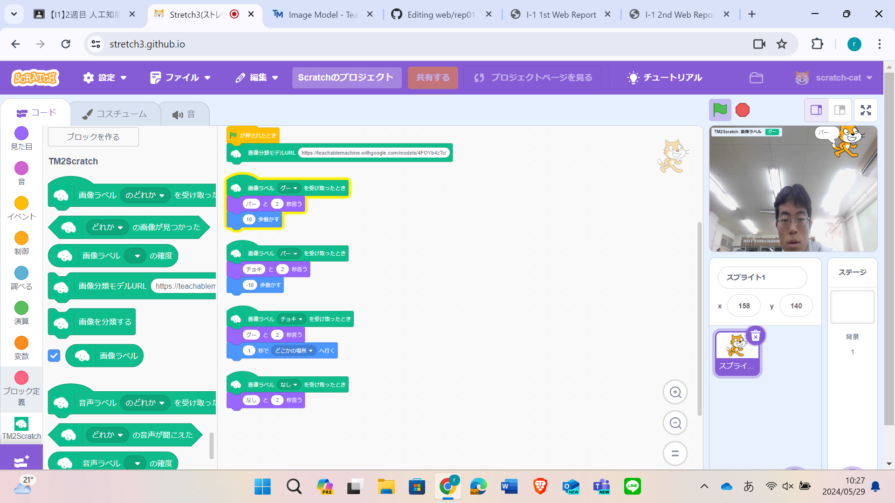
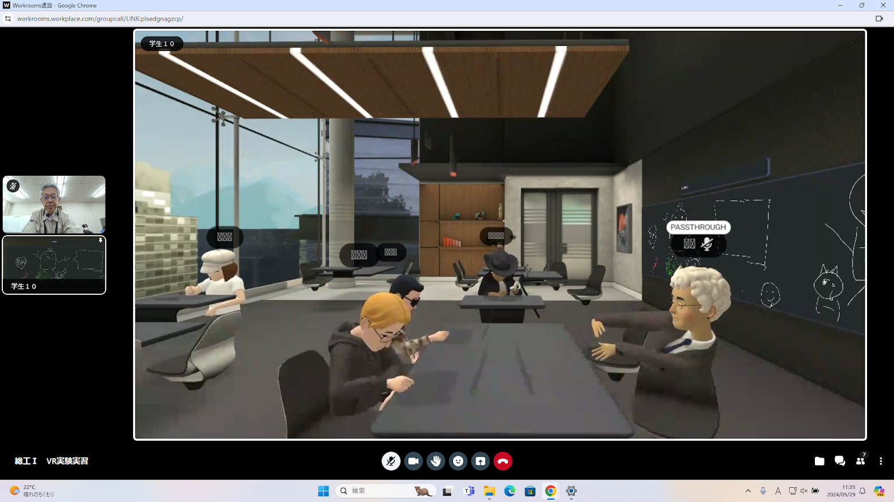

第2週目
2-1 2週目のレポートをHTMLで作る
1.内容
総合工学システム実験実習のテーマI1、第二週目のレポートをHTMLで作る。
HTMLはハイパーテキストを表示するためのマークアップ言語です。
マークアップ言語はプログラミング言語とは異なり、主にwebページでの
視覚表現や文章構造を記述するための組版指定に使われます。
2.感想
3. 2週目が完成した人は1週目のレポートも完成させる
2-2 機械学習体験

1.内容
Teachable Machineというサイトを使い、機械学習をしました。
画像を覚えさせ、じゃんけんのグー・チョキ・パーに加えて、何も出されていない
という4つの状態を識別するプログラムを作りました。
2.感想
Teachable Machineを使うことで、簡単に機械学習のイメージを掴むことができ、
機械学習の入門にぴったりのサイトだと思いました。
また、Teachable Machineでつくったデータをstretch3というサイトで、実際にプログラムに落とし込むことで、
機械学習とプログラミングを組み合わせることができました。
2-3 VR（バーチャルリアリティー：Virtual Reality）会議室の体験

1.内容
workloomsを使いVR空間での会議を体験しました。
VRは「バーチャルリアリティ」の略で、日本語では「仮想現実」と訳されることもあります。
VRゴーグルとコントローラーを用いてVR空間で、イラストを描いたり発言することができます。
2.感想
VR空間の中だと現実世界の距離に関係なく、コミュニケーションをとったり交流ができるなど
フィジカル空間と変わらないほどリアルになっていると思いました。
実際に会議に導入している会社があるほど、zoomでは伝わりにくい三次元の形も細部まで説明できるなどのメリットがあると思いました。